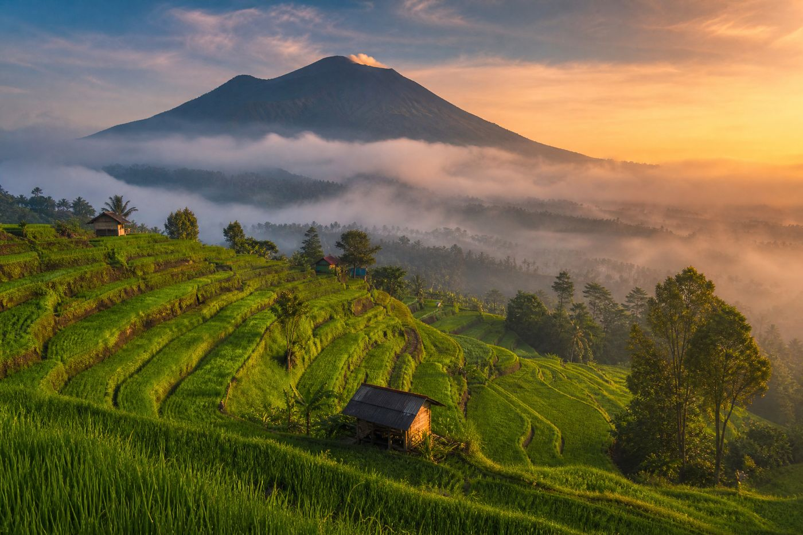
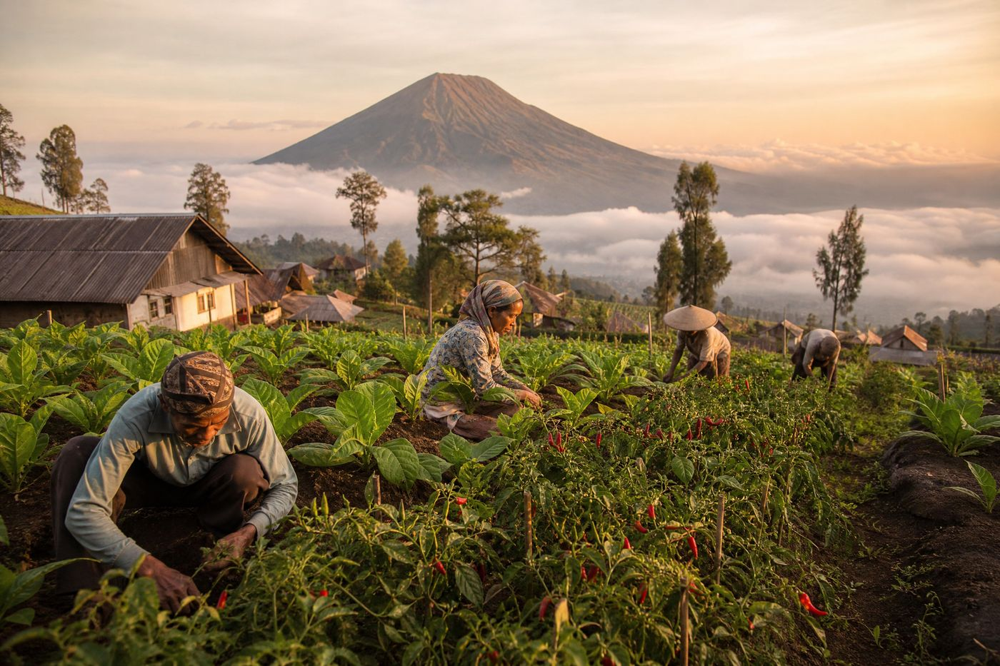
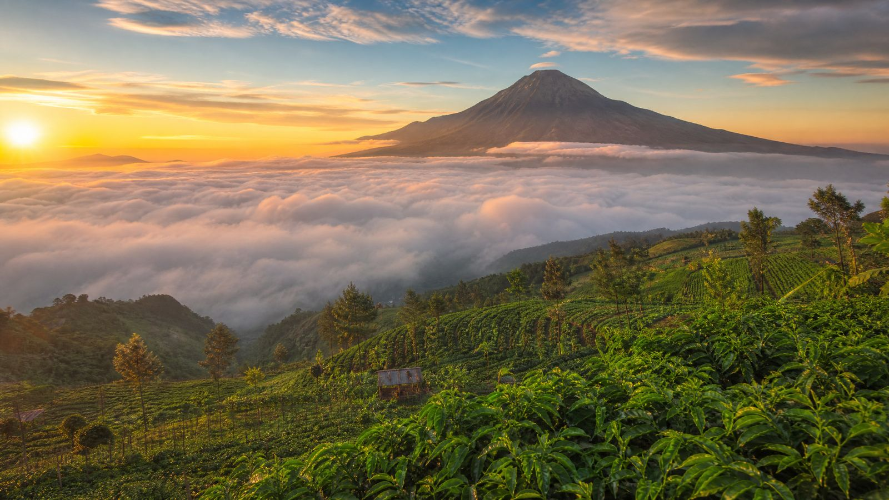
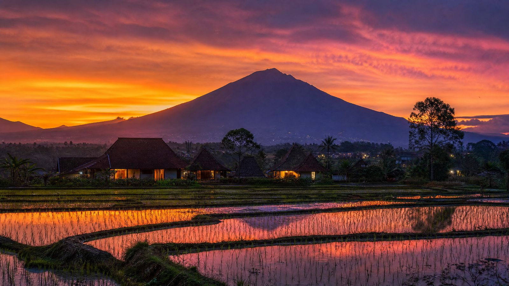

Destinasi & Tempat Menarik
Jelajahi pesona alam dan kehidupan desa di ketinggian 750 mdpl, lereng Gunung Sumbing.
Wisata Alam
Pesona Lereng Gunung Sumbing
Kentengsari menawarkan ketenangan khas desa pegunungan — udara sejuk, hamparan hijau, dan keramahan warganya.



Panduan
Tips Berkunjung ke Kentengsari
Beberapa hal yang perlu diperhatikan agar kunjungan Anda semakin nyaman.
Waktu Terbaik
Pagi hingga siang hari saat cuaca cerah. Musim kemarau menawarkan pemandangan Sumbing yang paling jelas.
Akses & Rute
Sekitar 2,5 Km dari ibu kota Kecamatan Windusari, atau 29 Km dari Kota Magelang melalui Bandongan.
Yang Perlu Dibawa
Jaket atau pakaian hangat — udara di ketinggian 750 mdpl cukup sejuk, terutama pagi dan sore hari.